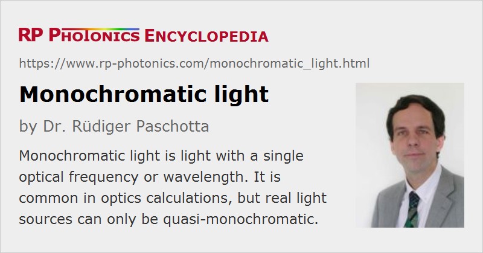

Monochromatic Light
Definition: light with a single optical frequency
More general terms: light
Opposite term: polychromatic light
German: monochromatisches Licht
How to cite the article; suggest additional literature
Author: Dr. Rüdiger Paschotta
Monochromatic light is light (optical radiation) where the optical spectrum contains only a single optical frequency. The associated electric field strength at a certain point in space, for example, exhibits a purely sinusoidal oscillation, having a constant instantaneous frequency and a zero bandwidth. Light sources can also be called monochromatic, if they emit monochromatic light.
The antonym of monochromatic is polychromatic. A typical example for polychromatic light is life created as thermal radiation, e.g. in an incandescent lamp; such light exhibits a broad range of optical frequencies.
Many calculations in optics and photonics are performed for monochromatic light. For example, the evolution of laser beams is usually calculated that way; there is just one given optical wavelength or frequency.
Real light sources can of course never be exactly monochromatic, i.e., have a zero optical bandwidth. However, particularly laser sources are often quasi-monochromatic, i.e., the optical bandwidth is small enough that certain behavior of the light can hardly be distinguished from that of truly monochromatic light. Some examples:
- Laser light used for laser absorption spectroscopy can be regarded as quasi-monochromatic if its bandwidth is far below that of the spectral features of interest.
- When a light beam should be intensity-enhanced in an optical resonator (for example, for resonant frequency doubling), its bandwidth should be well below the bandwidth of the resonator.
- For the operation of interferometers, the finite bandwidth of light is not relevant if the coherence length is well above any path length differences in the apparatus.
Obviously, the permissible optical bandwidth for quasi-monochromatic light depends very much on the circumstances.
The term monochromatic originally means having only a single color. Different optical wavelengths of visible light are associated with different perceived colors. However, light colors are rarely a criterion for monochromaticity in practice, and non-monochromatic light can also have specific colors. Also, the term is applied to infrared and ultraviolet light as well as to visible light.
Lasers are the primary sources of quasi-monochromatic light. In contrast to narrow-band light obtained by bandpass filtering light from a broadband source (see below), lasers can generate quasi-monochromatic light with high optical powers. Some lasers even exhibit extreme degrees of monochromaticity, i.e., an extremely small optical bandwidth. The highest degree of monochromaticity is achieved with carefully stabilized single-frequency lasers (sometimes with a bandwidth well below 1 Hz).
Before the advent of the laser, it was quite difficult to produce monochromatic light. One possibility was to use certain gas discharge lamps and metal vapor lamps (e.g. mercury vapor lamps and sodium vapor lamps), emitting light dominantly in certain narrow spectral lines, and isolating one such line with a suitable monochromator. The achieved optical powers and intensities were quite low.
A monochromator is essentially a kind of optical filter which allows one to isolate light in a narrow spectral interval from other light. Its output will therefore be quasi-monochromatic. However, light at all other wavelengths is then lost.
Questions and Comments from Users
Here you can submit questions and comments. As far as they get accepted by the author, they will appear above this paragraph together with the author’s answer. The author will decide on acceptance based on certain criteria. Essentially, the issue must be of sufficiently broad interest.
Please do not enter personal data here; we would otherwise delete it soon. (See also our privacy declaration.) If you wish to receive personal feedback or consultancy from the author, please contact him e.g. via e-mail.
By submitting the information, you give your consent to the potential publication of your inputs on our website according to our rules. (If you later retract your consent, we will delete those inputs.) As your inputs are first reviewed by the author, they may be published with some delay.
See also: optical frequency, polychromatic light, narrow-linewidth lasers, bandwidth, linewidth, monochromators
and other articles in the category general optics
|  |
If you like this page, please share the link with your friends and colleagues, e.g. via social media:
These sharing buttons are implemented in a privacy-friendly way!